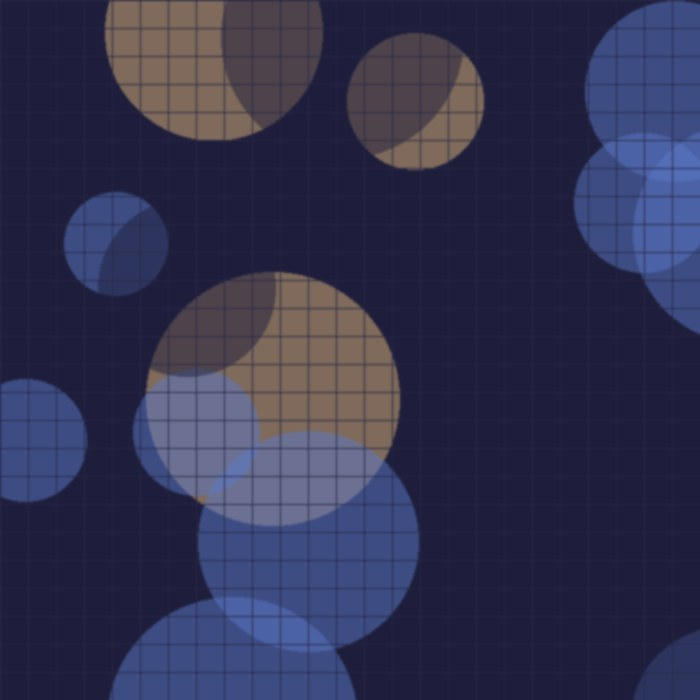

Фритрек и нулевой спринт: Подготовка к работе

стартЭто было самое начало пути. На этом этапе важно было проникнуться основами и настроиться на учёбу. И, возможно, подумать, как новые знания могут повлиять на ваше будущее.
Помню, как долго выбирала ноутбук и боялась, что всё будет слишком сложно. В первый вечер просто смотрела видиоуроки и записывала термины в тетрадку.